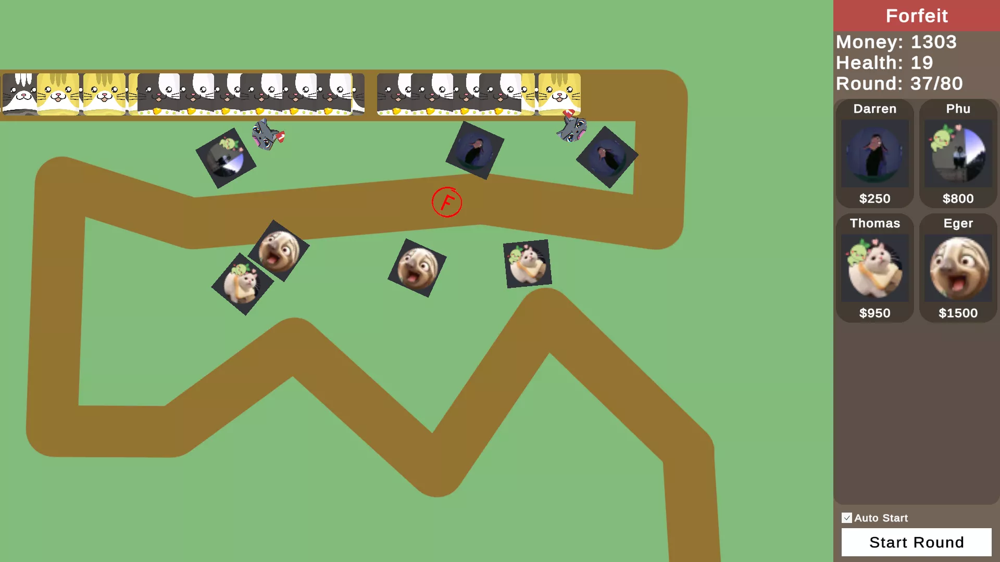
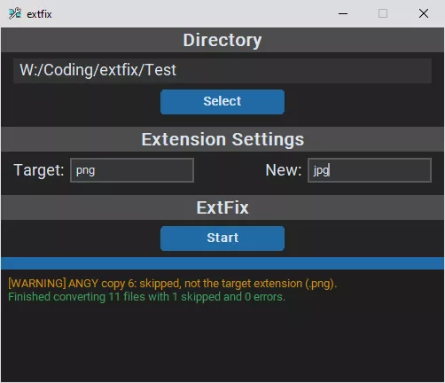
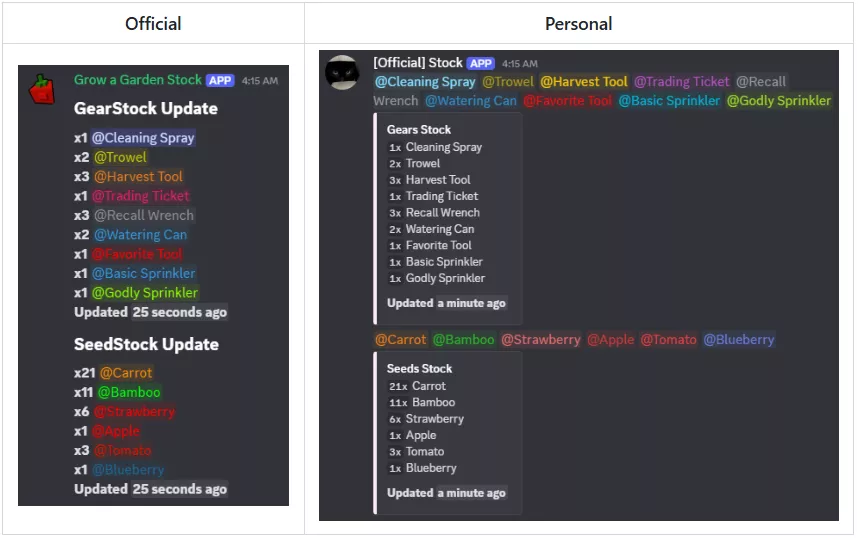

Software Engineer
B.S. Computer Science, Cal Poly Pomona '25
Hi, I'm Thomas
I have been most at home in front of a computer for as long as I can remember. That early interest led me through a series of high school computer classes—from Game Design and Web Design to Java and Robotics—and eventually to Cal Poly Pomona, where I earned my degree in Computer Science.
I build software that I personally want to use or that my friends and family are looking for. My most notable project is the "Cobblemon Breeding" mod, which has reached over 200,000 downloads. To build it, I had to dive into the deep end of the modding community—reading through the Kotlin source code of the official Cobblemon API and manually refactoring complex file structures to ship a core feature the community was missing.
I am a "hardcore" user who is most at home at my desk. Whether I am navigating complex file structures in WSL Ubuntu or troubleshooting hardware, I am at my best when I have a specific problem to solve. I am currently looking for an entry-level Software Engineering role, ideally in a remote-first environment, though I am open to local opportunities or relocating for the right challenge.
Technical Experience
Lead Developer | Cobblemon Breeding
April 2023 - Feb. 2025- Maintained live mod with 200,000+ total downloads, performing full software development lifecycle and critical maintenance.
- Migrated codebase across major versions (v1.3.2 -> v1.4 -> v1.6.1), developing in Java analyzing Kotlin source to ensure API compatibility and stability.
- Engineered complex features including shiny rate configs, VIP breeding cooldowns, and hidden ability inheritance systems.
Technical Peer Tutor | Freelance & Collegiate
Aug. 2020 - Dec. 2024- Provided 1-on-1 technical guidance to CS peers, specializing in C++, Java, and Python.
- Simplified abstract concepts like Object-Oriented Programming and Data Structures into actionable examples for coursework.
- Mentored students on setting up and optimizing development environments, including WSL Ubuntu on Windows.
Lead Developer | Flash Study
June 2023 - July 2023- Engineered a robust persistence layer utilizing Cloud Firestore for real-time synchronization and Sqflite for local SQL storage, ensuring data availability in offline environments.
- Integrated Firebase Auth to manage secure user life-cycles, supporting account creation and personalized data syncing across multiple Android devices.
- Leveraged Path Provider and File Picker to build a custom JSON serialization engine, enabling users to export and import study sets as physical files.
- Utilized Settings UI and Google Fonts to implement a modern interface featuring a dynamic Dark Mode, progress tracking, and custom-branded launch icons.
Technical Skills
Languages
- Java
- Python
- C/C++
- HTML/CSS
- JavaScript
- C#
- Dart
Frameworks & Engines
- Unity
- Flutter
- Django
- CustomTkinter
- Asyncio / Requests
Developer Tools
- Git
- Linux / WSL
- VS Code
- IntelliJ / Android Studio
- Gradle
- ESLint / Prettier
- Pylint / cpplint
Databases & Cloud
- GCP
- Firebase
- Cloud Firestore
- AWS
- SQLite
Projects
Cobblemon Breeding

- Achieved 200,000+ downloads, serving as the primary community solution during the mod's fastest growth period.
- Architected the first major breeding implementation for Cobblemon to fill a critical gap in the official API.
- Reverse-engineered Kotlin source to ensure Java compatibility and stability.
Animals Tower Defense

- Led a 3-person team to deliver a playable release, refactoring pathfinding logic for precise waypoint movement.
- Architected reusable entity templates for maps, enemies, and towers to streamline content creation within Unity.
- Engineered a multi-tier upgrade system to dynamically manage unit stats and difficulty scaling.
extfix

- Identified file organization issues from bulk social media downloads where some files were missing extensions.
- Built a Python CLI tool to detect and fix specified file extensions.
- Expanded into a GUI app using CustomTkinter for non-technical users.
Discord Message Relay

- Built a real-time message relay system reducing Discord "Follow" latency (1-5 min → near-instant).
- Developed an asyncio-based listener to monitor and mirror server activity.
- Designed role-based message routing using dictionary-mapped structures.